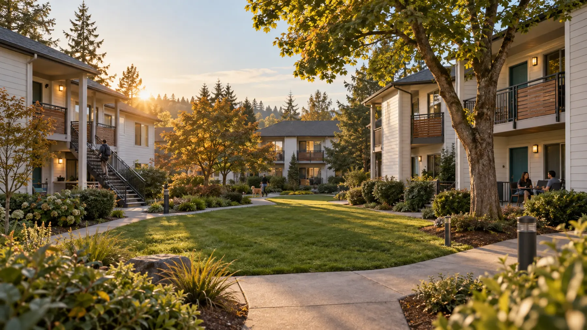
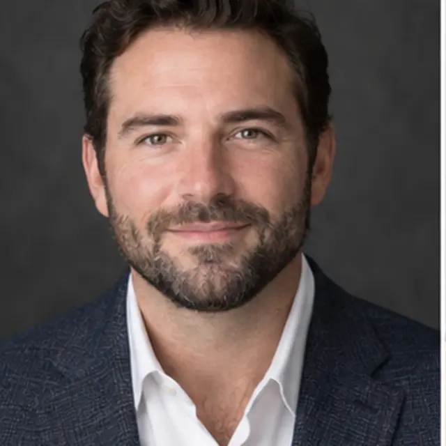
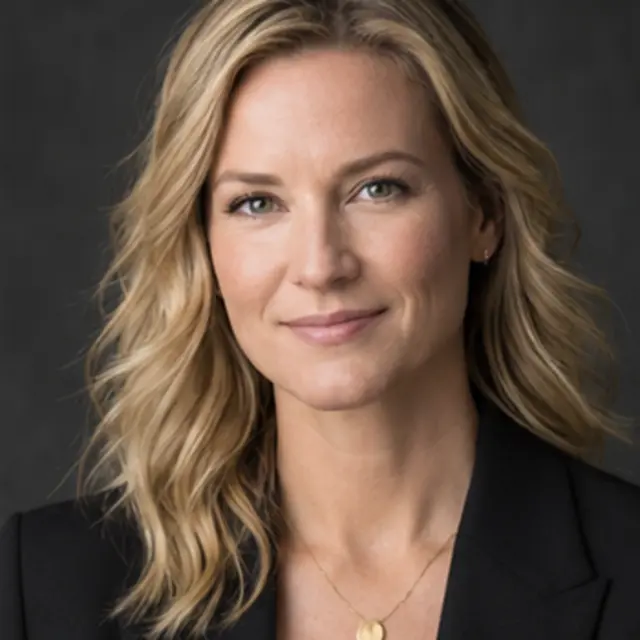

Protect the downside
Conservative underwriting, practical leverage, and multiple exit paths come before upside projections.

Multifamily investment & operations
We align disciplined acquisitions, thoughtful operations, and dependable execution to create durable communities and long-term value.
*Sample figures for demonstration only. Replace with verified company data before publication.
Why we exist
Ground Floor Capital is a sample vertically integrated multifamily team built around a simple idea: better results begin with better alignment. Our specialists evaluate opportunities together, pressure-test the plan, and stay involved through execution.
Our goal is to build a resilient portfolio of well-located apartment communities while creating clear, repeatable ways for investors and operating partners to participate.
What guides us
Conservative underwriting, practical leverage, and multiple exit paths come before upside projections.
We focus on resident experience, disciplined expense control, and improvements the market will actually value.
Defined ownership, direct communication, and transparent reporting keep investors and partners aligned.
How we work with you
Invest with context
We present the business plan, capital structure, assumptions, and material risks in plain language. After closing, investors receive consistent reporting and access to the team responsible for execution.
Bring the right bench
Local operators, brokers, owners, and sponsors can engage our team where it adds the most value—from underwriting and capital formation to transition planning and ongoing asset management.
Our operating system
Broker relationships, direct outreach, and partner referrals focused on markets we understand.
Property-level diligence, sensitivity analysis, and business plans grounded in achievable operations.
Hands-on transition management, accountable vendors, and resident-first improvements.
Monthly operating reviews and investor updates tied to the original plan and current realities.
Property under management
This example case study shows how a property can be presented without promising returns or exposing confidential information.
Ridgeline Apartments
A sample 156-unit, garden-style community acquired to improve resident experience, strengthen onsite operations, and complete targeted interior and exterior upgrades.
Resident retention · Water-efficiency upgrades · Unit-turn standardization · Preventive maintenance
The team
Seven complementary roles cover the full investment lifecycle. Sample names, profiles, and portraits are provided for design demonstration.

Managing Principal & Team Lead
Sets investment direction, leads major relationships, and keeps portfolio decisions aligned with long-term goals.
Alex brings 18 years of illustrative experience across acquisitions, asset management, and institutional partnerships. Before founding the firm, Alex led regional multifamily strategy for a private real estate company.
Director of Acquisitions
Builds the pipeline, leads diligence, and turns market intelligence into actionable acquisition decisions.
Maya’s sample background includes sourcing and evaluating more than $400 million of multifamily opportunities across the Pacific Northwest and Mountain West.
Director of Property Operations
Oversees onsite teams, resident experience, maintenance standards, and property-level business plans.
Marcus has an illustrative 15-year operating background spanning lease-ups, renovations, and stabilized communities totaling more than 3,000 units.

Senior Underwriter
Tests assumptions, models downside scenarios, and translates property data into clear investment decisions.
Elena’s fictional profile combines credit analysis, valuation, and deal modeling experience with a disciplined approach to uncertain market conditions.
Director of Capital Partnerships
Builds investor relationships, coordinates offerings, and maintains a consistent communication program.
Priya’s sample experience includes private capital formation, investor education, and relationship management for real estate and private-market strategies.
Construction & Renovation Lead
Scopes capital projects, manages contractors, and keeps renovations tied to the operating plan.
Daniel brings a fictional 20-year background in multifamily construction, building systems, vendor management, and occupied-property renovations.
Asset Management Associate
Tracks performance, supports reporting, and helps property teams turn operating data into timely action.
Ethan’s illustrative profile blends real estate finance, business intelligence, and portfolio reporting with a focus on clear, decision-ready information.
Collective experience
Our sample team combines acquisitions, finance, construction, property operations, and investor relations. That breadth helps us identify issues earlier, move decisively when facts support it, and stay accountable after closing.
Common questions
This sample strategy focuses on 75–250 unit, garden-style and low-rise communities in growing secondary markets, generally with operational or physical improvement potential.
Depending on the project, the team can support underwriting, due diligence, capital planning, investor communications, renovation oversight, or asset management. Roles and decision rights should be defined before engagement.
A typical cadence may include a secure portal, quarterly narrative updates, financial reporting, annual tax documents, and prompt notices for material events. Actual practices should be stated precisely before publication.
No. All real estate investments involve risk, including possible loss of principal. Any offering would be made only through its formal legal documents, which investors should review with their own advisers.
Start with the opportunity
Tell us whether you’re evaluating an investment, bringing a property, or looking for an operating partner. We’ll start with a focused conversation.
hello@example.com